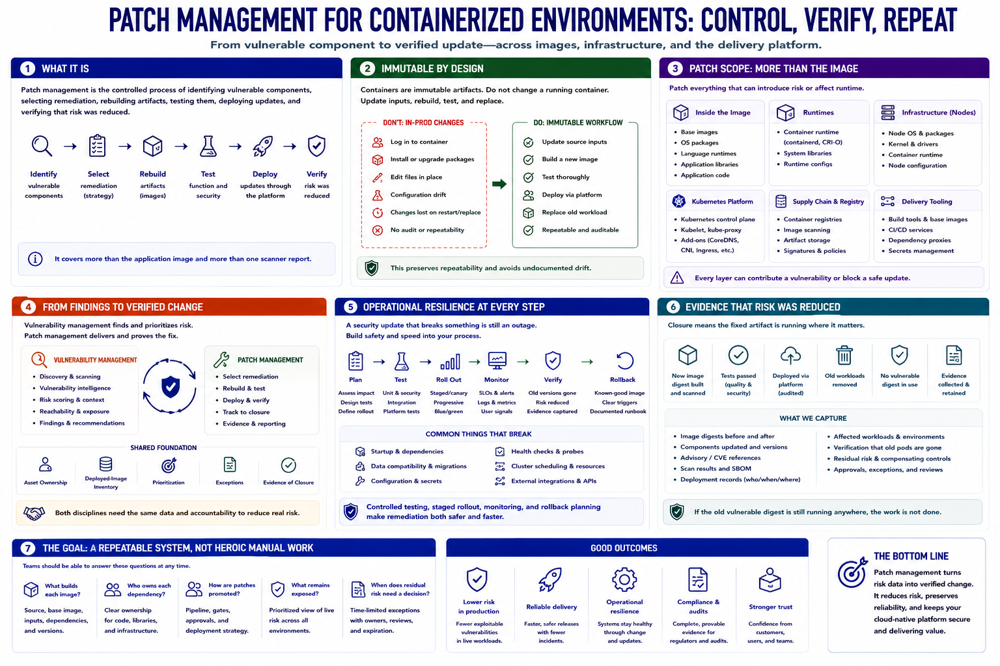

What Patch Management Means for Containers
Connecting to LMS... Progress: in progress

Narration
Patch management for containerized environments is the controlled process of identifying vulnerable components, selecting remediation, rebuilding artifacts, testing them, deploying updates, and verifying that risk was reduced. It covers more than the application image and more than one scanner report.
Containers are usually treated as immutable artifacts. Instead of logging into a running container and changing packages by hand, teams update the source inputs, create a new image, test it, and replace the old workload through the deployment platform. This preserves repeatability and avoids undocumented drift.
Patch scope includes base images, operating-system packages, language runtimes, application libraries, and application code. It also includes container runtimes, node operating systems, Kubernetes components, registries, build tools, and CI/CD services that sit outside the image.
Vulnerability management supplies findings and risk context. Patch management turns that information into verified change. The two disciplines need asset ownership, deployed-image inventory, prioritization, exceptions, and evidence that the fixed artifact reached the affected environment.
Operational resilience matters throughout. A security update that breaks startup, data compatibility, health checks, or cluster scheduling can create an outage. Controlled testing, staged rollout, monitoring, and rollback planning make remediation both safer and faster.
The goal is a repeatable system, not heroic manual intervention. Teams should know what builds each image, who owns each dependency, how patches are promoted, what remains exposed, and when residual risk requires an explicit decision.